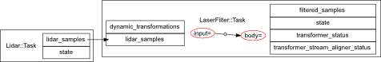
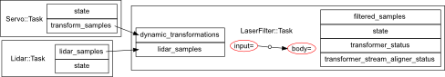
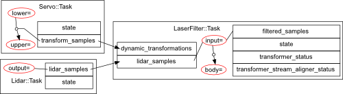
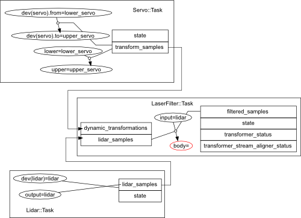

So far, we have seen the following bits about the transformer:
This page will deal with the usage of the transformer in Syskit, Rock’s system management layer. We will first see what Roby can do for you when using the transformer, then how to extend the transformer models to allow full automatic configuration and how to provide the runtime configuration.
There is a corresponding tutorial, so we advise you to follow it as well
The challenge here is to be able to configure and reconfigure a complete system by providing the minimal amount of information, as always in Syskit.
Let’s take the same example than before: our laser filter (and, for now, only the laser filter). Conceptually, the processing chain for that filter is:

When doing Ruby scripting, one has to specify 4 frames:
However, one can notice that by construction, the frames of the lidar_samples port, the input frame of the laser_filter::Task and of the filtered_samples ports are all the same.
Moreover, since to get the input-to-body transformation, the laser filter component will need the output transformation from the servo. The actual needed network on our example system should therefore actually look like:

However, the additional servo component is very specific to our system, and is dependent on the laser filter configuration (a different assignation of frames to input and body could lead to chains that do not require the servo output, or chains that would require a different transformation producer).
What we will now see is:
What we have seen in the previous pages are the transformer specification that are required for a component to work. I.e. how to declare the transformations that our processing needs, and how to use them from the component implementation.
What we are dealing with now is modelling that describes how the component is implemented. I.e., the declarations that we will discover below will not change the component behaviours. They are merely meant to describe it.
These declarations can be added in either the component’s oroGen file or, if that file is not available or for convenience reasons, to Syskit . I.e. either in laser_filter.orogen:
task_context "Task" do
transformer do
<declarations>
end
end
or, in models/orogen/laser_filter.rb
class LaserFilter::Task
transformer do
<declarations>
end
end
When should you do one or the other ?. One thing to consider, when adding these declarations, is that by adding it to an oroGen project, you make this project dependent on the drivers/orogen/transformer package. This is not an issue when it is already the case, but might be undesirable when adding it to tasks that otherwise do not require this dependency (such as, in our example, the lidar and servo tasks).
To associate a frame to a port, i.e. to tell the system that a particular port is expressed in a particular frame, one adds
associate_frame_to_ports "frame_name", "port_name1", "port_name2"
where the ports can be both inputs and outputs. In our laser filter, the needed declaration would be:
associate_frame_to_ports "input", "lidar_samples", "filtered_samples"
and in the lidar task, it would be:
associate_frame_to_ports "output", "lidar_samples"
To associate a transformation to a port, i.e. to tell the system that a particular port outputs a transformation, one adds:
transform_output "port_name", "source_frame" => "target_frame"
For instance, in the servo task, one would add:
transform_output "transform_samples", "lower" => "upper"
And now, the result:

What we have so far is: a model of each of our component’s frames, and how these frames are linked to the transmitted data.
We’re missing two things:
But, first things first, the transformer integration is currently disabled by default, so you need to add the following line in config/init.rb (or uncomment it in bundles created by rock-create-bundle)
Syskit.conf.transformer_enabled = true
The transformer when used in Syskit is configured in transformer blocks within the Syskit profiles. For instance
profile 'P' do
transformer do
end
end
The non-dynamic part of the transformer configuration file is identical in Syskit and in Ruby scripts. Assuming that a configuration file that does not contain dynamic transformation statements is called config/transforms.rb, one would load it with
profile 'P' do
transformer do
load 'config/transformer.rb'
end
end
In Ruby scripts, dynamic transformation producers were declared as strings following the task_name.port_name pattern. In Syskit, it must be a subsystem declaration, a component model or a device.
For instance, in our running example, one would do
profile 'P' do
robot do
device Dev::Actuators::Dynamixel, :as => 'dynamixel'
end
transformer do
load 'config/transformer.rb'
dynamic_transform dynamixel_dev, "lower" => "upper"
end
end
What’s left to do is introduce some frames in the system specification.
There are two main type of frames that usually need to be specified:
Sensor frames are specified in the device declarations in the robot block in the profiles
profile 'P' do
robot do
device(Dev::Lidar).
frame('laser')
device(Dev::Servo).
frame_transformation('lower_servo' => 'upper_servo')
end
end
These frames get propagated in the network, and usually lead to having most of the frame assignations resolved:

Finally, one needs to specify in which frame the laser filter should do its processing. This is given as the same time than one gives #use flags:
TutLaserFiltering.
use_frame('body' => 'body')
Finally, one can see in the network above that the Servo::Task got added. This is done automatically because the transformation produced by the servoing task is required by the laser filter. The laser filtering composition does not include the servo explicitely.
However, this also mean that you have no mean to give specific configurations to the servo. To do that, you need to override the generic transformer configuration when adding the laser filter composition:
TutLaserFiltering.
use_frame('body' => 'body').
use_transformation_producer(
'lower_servo', 'upper_servo',
Servo::Task.use_conf('default', 'sweeping')
)